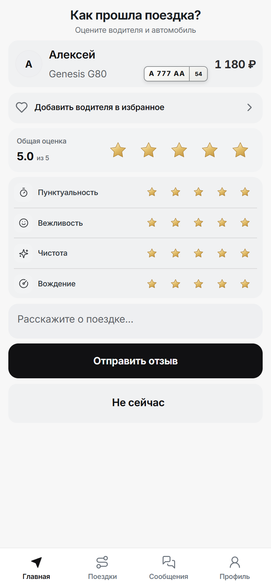
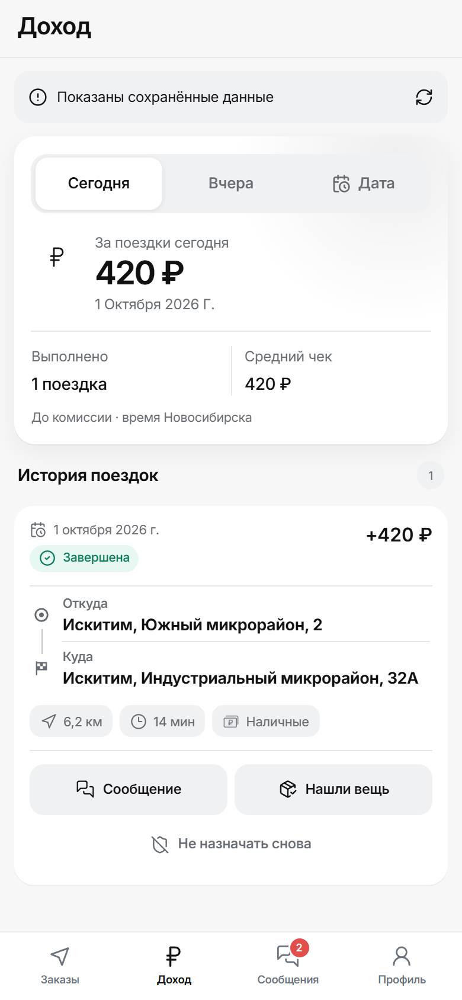
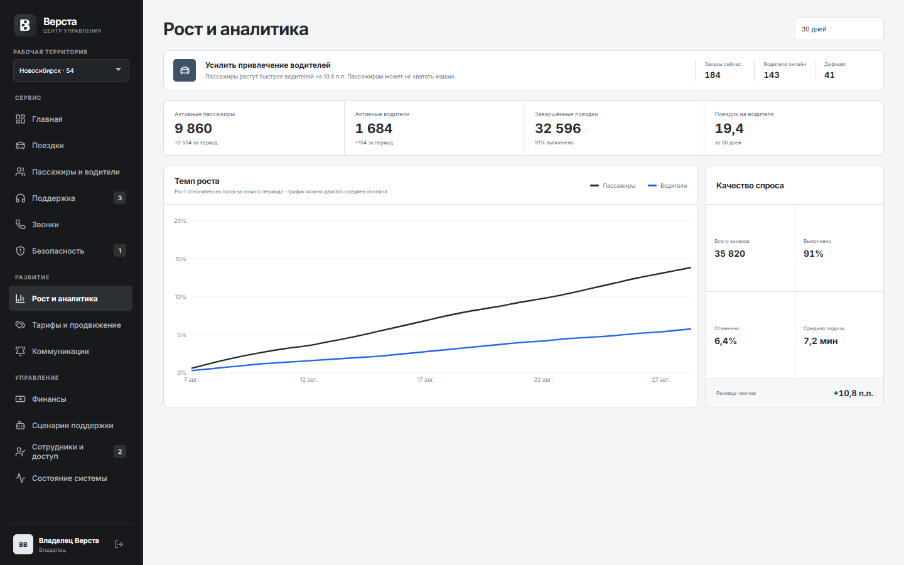
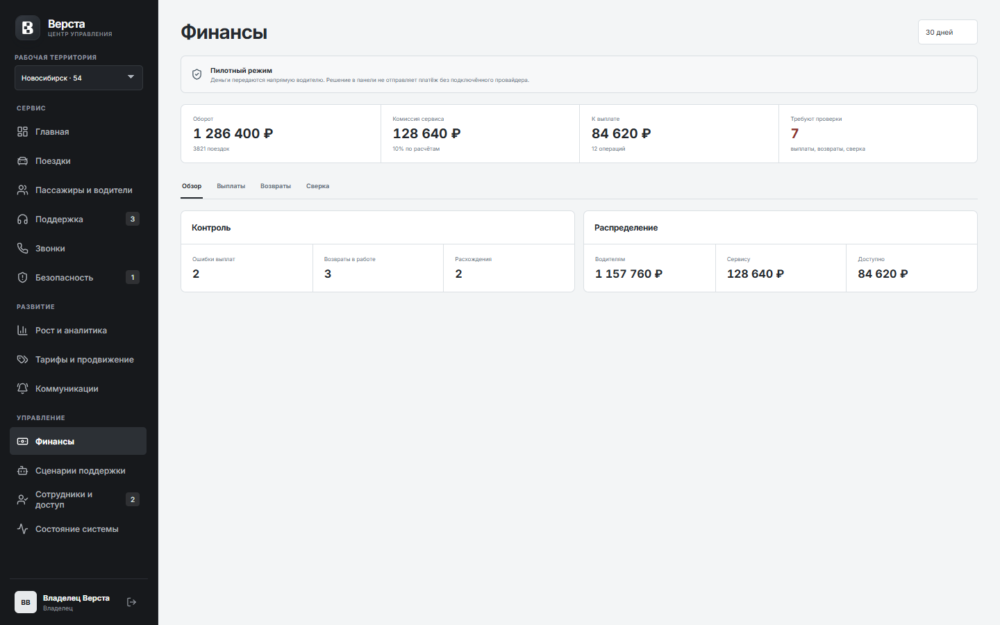

ЦИФРОВОЙ СЕРВИС ПОЕЗДОК
Поездка —
одна система.
Пассажир заказывает машину. Водитель выполняет поездку. Команда видит, что происходит в сервисе.


ЗАДАЧА ПРОДУКТА
Все участники поездки видят своё — и работают вместе.
Заказ, водитель и контроль сервиса не должны жить в разных местах. Верста соединяет их в одном процессе: от расчёта цены до завершения поездки и просмотра результата.
01 / ПАССАЖИР
Маршрут и цена — до заказа.
Пассажир указывает адреса, выбирает тариф и видит стоимость. После заказа приложение показывает ход поездки и итог.
На экранеМаршрут · тариф · статус

02 / ВОДИТЕЛЬ
Заказ приходит с нужными деталями.
Водитель видит маршрут и стоимость нового заказа, а после выполнения — историю поездок и доход за день.
На экранеНовый заказ · доход

03 / КОМАНДА СЕРВИСА
Картина работы — в одной панели.
Оператору доступны текущие заказы, водители, спрос, аналитика и финансовый обзор. Можно быстро увидеть, где нужно внимание.


ОДИН СЦЕНАРИЙ
От заказа до результата.
- 01ПассажирВыбирает маршрут и тариф
- 02ВодительПолучает и выполняет заказ
- 03КомандаВидит поездки и показатели